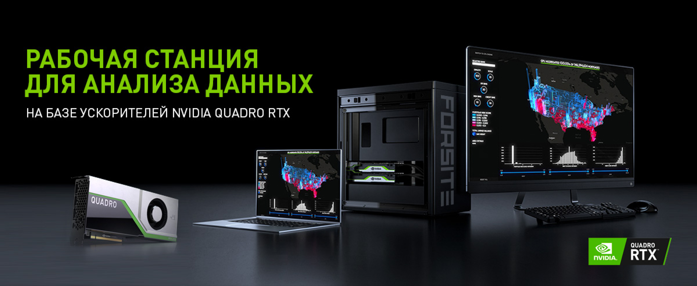

NVIDIA DATA SCIENCE WORKSTATION

Надежность и отказоустойчивость
-
Надежность 24/7
Специфика работы графических и расчетных станций подразумевает высокий уровень надежности и отказоустойчивости, именно поэтому при производстве наших рабочих станций мы используем надежные компоненты класса Workstation Ready прошедшие предварительное тестирование.
-
Гарантия 3 года
На все серии рабочих станций распространяется трехлетняя гарантия включающая в себя предупреждающую замену комплектующих. Для региональных заказчиков существует компенсация затрат на логистику. При необходимости существует возможность расширения гарантии до 5 лет.
-
Сервисная поддержка
В течение 12 месяцев с момента приобретения продукции Заказчику предоставляется бесплатная консультационная и техническая поддержка. Удаленная диагностика и рекомендации по обновлению системы.
-
Нестандартные решения
Если ваша задача не укладывается в возможности наших типовых решений, обратитесь за помощью к нашим техническим специалистам. Мы разработаем индивидуальный проект согласно вашему техническому заданию.